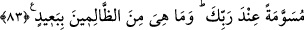

83. (O taşlar:) Rabb’in katında işaretlenerek (yağdırılmıştır). Onlar zalimlerden
uzak değildir.
O taşlar: “Rabb’in katında” yâni Rabb’in katından geldi, demektir. Kâşifî belirttiğine
göre ‘Senin Rabb’in hazînesinde hazırlamış, âmâde kılmış idi.’ demektir.
“işaretlenerek” yağdırılmıştır. Bu taşlar dünya taşlarına benzemiyordu. Ya da kime
isabet edecekse onun adı yazılmıştı.
Rivâyet edilir ki taşlar, bu topluluktan ayrılıp başka yerlere gitmiş olanları nerede
olurlarsa olsunlar izleyip helâk etmiştir. Hatta onlardan birisi Harem-i Şerif bölgesine
girince taş kırk gün havada asılı kalmış, oradan çıkınca başına isabet ederek adamı
helâk etmiştir.
Zâhidî Tefsîri’nde şöyle denilir: Büyük taşlar küp gibi, küçük taşlar ise su testisi
kadardı.
Fakir (Bursevî) şöyle der: Öyle tahmin ediyorum ki şehirlerin üstünün altına
çevrilmesinden sonra bir de taş yağdırılması, -tıpkı Salih kavminin o korkunç sesle
helâk edilmesinden sonra başlarına gelen zelzele gibi- sırf cezayı tam olarak vermek ve
çeşitli ihtiyaçları için şehirlerden ayrılıp yolculuğa çıkanların da helâk olmasını
sağlamak içindir. Anlaşılan budur. En iyisini Allah bilir.
“Onlar” özellikleri belirtilen bu taşlar, “zâlimlerden” yâni hiçbir zâlimden “uzak
değildir.” Lût kavmi de zulümleri sebebiyle bu azaba müstahak ve dûçar olmuştur.
Bu ifadede bütün zâlimler için tehdid vardır. Hz. Peygamber (s.a.)’in bu ifadenin
mânâsını Cebrail (a.s.)’a sorduğu, onun da şu cevabı verdiği kaydedilir: “Burada, senin
ümmetinin zâlimleri kastediliyor. Hiçbir zâlim yoktur ki her an başına düşüverecek bir
taşın hedefi olmasın.”
Hâsılı, zâlimler bu taşlardan kurtulacaklarını, selâmete ereceklerini sanmasınlar.
Aksine öldükleri ve ölümlerinin sabahına erdiklerinde bu taşlar üzerlerine düşecektir.
Şu hâdise de bu anlattığımıza benziyor: Hz. Peygamber (s.a.) ashâbı ile birlikte
mescidde otururlarken, büyük bir gürültü duydular. Bu, bir duvarın yıkılırken çıkardığı
gürültüye benziyordu. Korktular ve endişeye kapıldılar. Hz. Peygamber (a.s.) şöyle
buyurdu:
“–Bu gürültünün ne olduğunu biliyor musunuz?”
Oradakiler:
“–Allah ve Rasûlü daha iyi bilir.” deyince şöyle buyurdu:
“–Yetmiş sene önce cehennemin üst tarafından atılan bir taş şu anda dibine ulaştı.
İşte bu taşın dibe ulaşması ve oraya düşmesinin çıkardığı gürültüdür.”
Hz. Peygamber (s.a.) sözünü bitirmemişti ki münafıklardan birinin evinden bir feryad
yükseldi. Bu adam yetmiş sene yaşadıktan sonra ölmüş ve cehennemin dibini